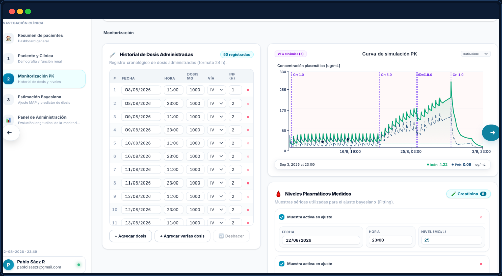
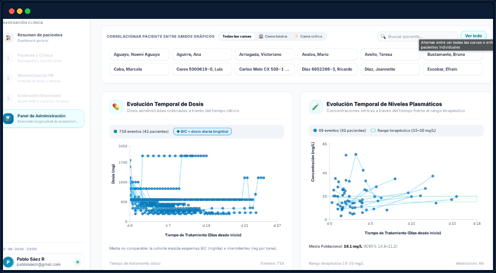

PK-Bayes en acción, paso a paso
Tres escenarios que muestran cómo cada rol clínico usa la plataforma en el día a día — desde el ingreso del paciente hasta el ajuste final de dosis.
Vancomicina en Falla Renal Aguda Dinámica (AKI) y Recuperación
Paciente sintético #482 — 68 años, varón, 82 kg, ingreso en UCI por sepsis respiratoria con creatinina fluctuante (1.1 → 1.6 → 2.4 → 1.8 mg/dL).
Ingreso y Dosificación Empírica Guiada por AUC
Se registra peso, talla y creatinina sérica inicial (1.1 mg/dL, ClCr 72 mL/min). PK-Bayes propone dosis de carga de 25 mg/kg (2000 mg en infusión de 2h) y mantenimiento de 1000 mg q12h basado en Goti et al. 2018 (BSV V1 ~30%).
Deterioro Renal (AKI) y TDM a las 24h
La creatinina asciende bruscamente a 1.6 mg/dL (AKI estadio 1). Se extrae nivel TDM aleatorio a las 24h reportando 18.4 mg/L. En sistemas estáticos se asumiría error o se promediaría a ciegas; PK-Bayes resuelve por tramos mediante scipy.integrate.solve_ivp preservando la masa en A1(t) y A2(t).
Recálculo Bayesiano MAP Instantáneo
El motor actualiza los parámetros individuales en < 100 ms: el aclaramiento individual cae a CL = 2.65 L/h y Vd = 54.2 L. Si se mantuviese la pauta de 1000 mg q12h, el AUC24 acumulado superaría los 680 mg·h/L con alto riesgo de nefrotoxicidad severa.
Simulación What-If y Ajuste de Prescripción
El farmacéutico simula una reducción a 750 mg q12h (o 1000 mg q18h). La predicción en estado estacionario proyecta un AUC24/CIM de 485 mg·h/L y valle de 16.2 mg/L, situando al paciente en el rango óptimo según el consenso ASHP 2020.

Reproduce el ajuste What-If del paciente #482
Vancomicina en Shock Séptico y Hemodiafiltración Continua
Paciente sintético #612 — 54 años, varón, 78 kg en anuria bajo CVVHDF con tasa de efluente de 30 mL/kg/h.
Parametrización de la Terapia Extracorpórea
El intensivista ingresa los parámetros técnicos del circuito: Tasa de Efluente = 2.340 mL/h (30 mL/kg/h), Coeficiente de Tamizado del filtro polisulfona S = 0.80 y Aclaramiento residual = 0 L/h (anuria).
Cálculo Dinámico de Aclaramiento Extracorpóreo
PK-Bayes calcula automáticamente CL_CRRT = (2.34 L/h × 0.80) = 1.87 L/h y parametriza el volumen de distribución aumentado por reanimación hídrica (Vd = 62 L).
Prescripción Óptima sin Riesgo de Subdosificación
Los nomogramas convencionales subdosifican a estos pacientes al tratarlos como "falla renal terminal estándar". PK-Bayes propone una dosis de carga de 1.750 mg seguida de 1.000 mg cada 24h, logrando AUC24 de 510 mg·h/L y control rápido de la bacteriemia.
Alcance Futuro: Fenitoína con Cinética Saturable y Corrección de Sheiner-Tozer
Simulación del futuro módulo de Fenitoína — Paciente en UCI con hipoalbuminemia (2.4 g/dL) y nivel sérico total aparentemente "dentro de rango".
Nivel Total Aparentemente Normal
Se reporta un nivel sérico total de fenitoína de 14.0 mg/L (rango habitual 10–20 mg/L), lo que en un análisis convencional daría una falsa sensación de seguridad.
Corrección Automática por Fracción Libre
El algoritmo de Sheiner-Tozer proyectará el nivel corregido real en 24.1 mg/L, revelando que la fracción libre activa se encuentra en rango neurotóxico (2.4 mg/L frente al límite seguro de 2.0 mg/L).
Ajuste No Lineal por Michaelis-Menten
El módulo estimará los parámetros individuales Vmax y Km para calcular la dosis de desescalada exacta, evitando que el paciente entre en la zona hiperbólica de saturación hepática.
De la Cohorte Hospitalaria a la Creación de la Base de Datos PopPK
Servicio de Farmacia Clínica — Análisis longitudinal de cohorte de vancomicina y exportación automatizada para modelado poblacional.
Monitoreo en el Dashboard Longitudinal Pareado
El equipo visualiza en tiempo real las trayectorias sincronizadas de dosis diaria vs niveles plasmáticos, comparando camas básicas vs UCI con cálculo dinámico de Media e Intervalo de Confianza del 95% (IC95%).
Detección de Sesgo y Calibración de Prior Institucional
En el estrato VFG 30–45 mL/min, el Panel de Desempeño detecta que los modelos foráneos tienen RMSE de 5.4 mg/L. Al calibrar el prior local con los datos del centro, el error se reduce a RMSE 2.4 mg/L.
Generación de la Base de Datos PopPK en 1 Clic
El investigador exporta la base de datos completa de su hospital estructurada y estandarizada para su uso directo en NONMEM y Monolix, eliminando semanas de trabajo manual y facilitando publicaciones científicas.

Prueba estos flujos con tus propios datos
Comienza hoy tu prueba gratuita de 14 días sin costo, o adquiere el Plan Completo con acceso total y exportación de bases de datos PopPK.